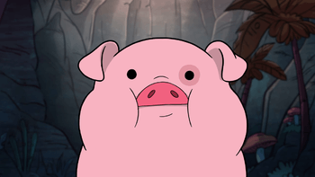

Пухля
Пухля (англ. Waddles) — домашний, ручной поросёнок Мэйбл, которого она выиграла на Ярмарке Чудес в эпизоде «Свинья путешественника во времени».
Пухля (англ. Waddles) — домашний, ручной поросёнок Мэйбл, которого она выиграла на Ярмарке Чудес в эпизоде «Свинья путешественника во времени».